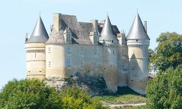
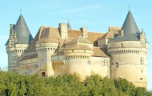
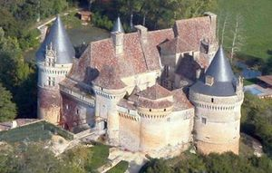
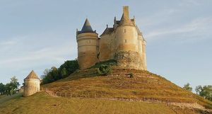
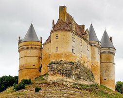
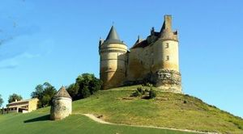
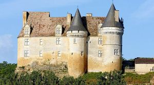
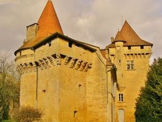
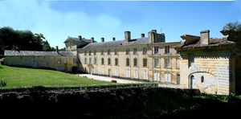

Recensement Jean-Claude Truffet
| Département | 24 — Dordogne |
| Canton | Beaumont |
| Commune | Beaumont en périgord |
| Type d'édifice | Château |
| Période d'origine | XIV-XV-XVI |
| Coordonnées GPS | 44° 47' 41,1" Nord et 0° 44' 56,9" Est grav de 1 à 7 . Luzier GPS : 44° 46' 11" Nord, 0° 46' 02" Est grav 9. Bayac GPS : 44° 48' 14" Nord et 0° 43' 44" Est grav 8. |









BEAUMONT est une bastide anglaise fondée en 1272 au nom d'Édouard Ier, roi d'Angleterre, par Lucas de Thaney, sénéchal de Guyenne. BANNES, château fort du sieur Jean de Seignal au XIVe siècle. Ramonet de Sort, capitaine de Castelnau de Berbiguières, sempare de Bannes en 1409 pour le compte des Anglais. Démantelé à la fin de la guerre de cent ans, il devient alors la propriété de Brandelis de Gontaut Biron. Cest Armand de Gontaud, frère de Brandélis et évêque de Sarlat qui procéda à la reconstruction complète. Vendu à Jean II de Losse en 1571, puis en 1882, achat par les Fayolle du Moustier, le château est acquis en 1960 par M. Lemasson il meuble parfaitement le paysage de cette splendide vallée de la Couze aujourd'hui propriété de la famille le Masson. Dans la commune le château de LUZIER, médiéval édifié au XIVe siècle, il est reconstruit au XVIIe et XVIIIe siècles par Jean de Paty qui avait acheté le comté de Beaumont et se trouvait à la fois seigneur de Luzier et comte de Beaumont : deux juridictions distinctes avec prérogatives de haute, moyenne et basse justice. Il devient conseiller au parlement de Bordeaux. Au XIXe siècle le domaine est vendu et des aménagements sont réalisés le fief appartient aux Paty, aux Vassal, aux Saint-Exupéry et aux de Contenson. BAYAC, à un km de Bannes au nord ouest forteresse médiévale du XIVe siècle, le château de Bayac appartenait autrefois à l'archevêque de Bordeaux. IL appartient depuis 1970 à la Ville de Paris qui en a fait une colonie de vacances, fut réaménagé au XVIe siècle où il reçut une tour ronde dans le style Renaissance. Il fut habité en continuité jusquau XXe siècle, si bien que ses propriétaires firent bâtir de nouveaux logis plus confortables aux XVIIIe et XIXe siècles. Il est inscrit aux M.H. depuis 1970.
BEAUMONT-du-Périgord possède encore des vestiges de son enceinte fortifiée et une porte médiévale récemment restaurée, la Porte de Luzier. De 1790 à 2015, la commune a été le chef-lieu d'un canton. Jusqu'en 2001, elle a porté le nom officiel de Beaumont. BANNES, la construction du château date de 1510. Il date du XVe et XVIe siècle. Construit au XIVe siècle, après la guerre de cent ans, il fut détruit puis reconstruit, c'est l'un des châteaux de la Renaissance les plus célèbres du Périgord. Le château de Bannes est classé aux M.H. depuis 2002. LUZIER, son assise est une falaise calcaire qui domine la vallée Un premier château médiéval a été édifié au XIVe siècle, entouré d'une enceinte fortifiée, avec des tours d'angle et des fossés. Le château a été reconstruit à la fin du XVIIe et au début du XVIIIe siècle après sa démolition lors du siège de 1585 par le Vicomte de Turenne. L'ensemble dessine un long rectangle selon un axe nord sud parallèle à la pente. L'ensemble dessine un long rectangle selon un axe nord sud parallèle à la pente. Deux ailes en retour d'équerre se greffent sur son élévation Est. L'une, à l'extrémité sud, complète la clôture de la cour sud, et l'autre fait la séparation entre les cours nord et sud. BAYAC bâti à Bayac, La construction date des XVe, XVIe et XIXe siècles. En juillet 1998, un spectacle son et lumière est présenté par les enfants de la colonie, retraçant l'histoire du château. Fin 2010, le château de Bayac a été mis en vente.
Bannes Famille d' Armand de Gontaud Luzier Famille de Paty
"
Bannes GPS : 44° 47' 41,1" Nord et 0° 44' 56,9" Est grav de 1 à 7 . Luzier GPS : 44° 46' 11" Nord, 0° 46' 02" Est grav 9. Bayac GPS : 44° 48' 14" Nord et 0° 43' 44" Est grav 8.